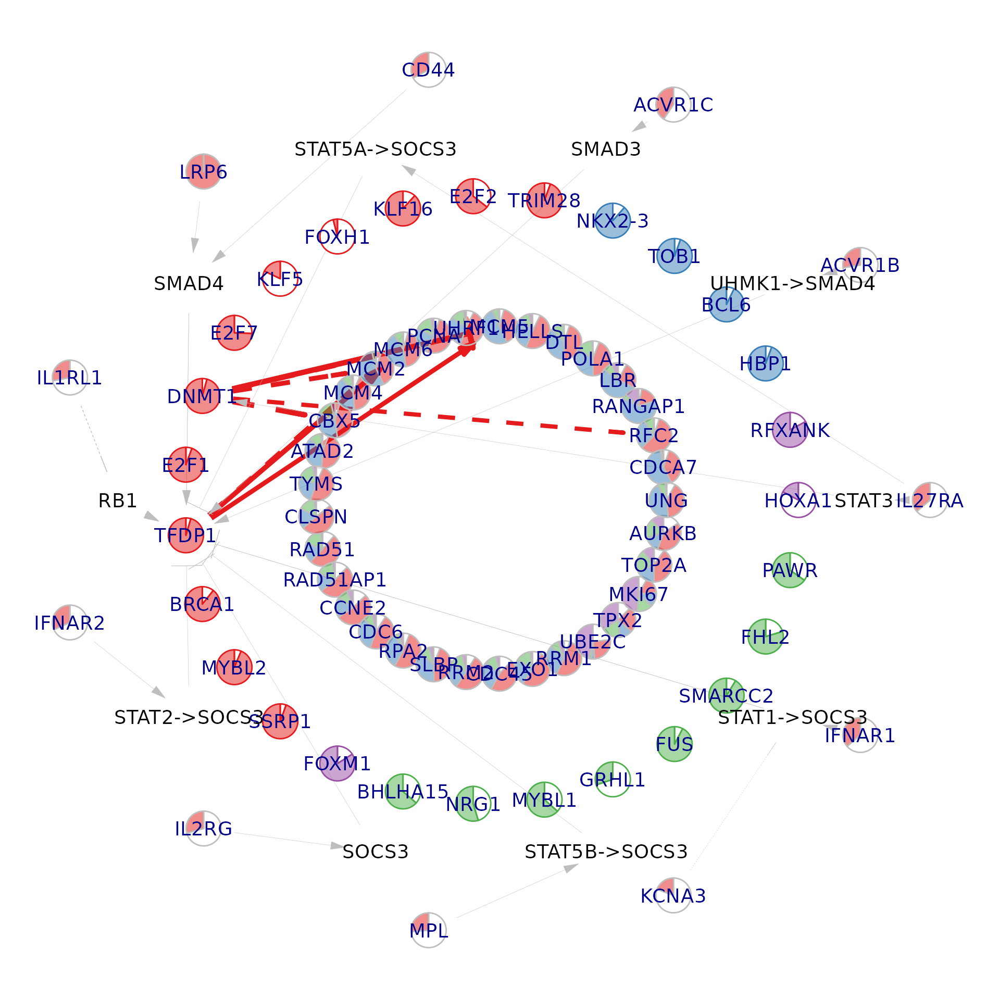
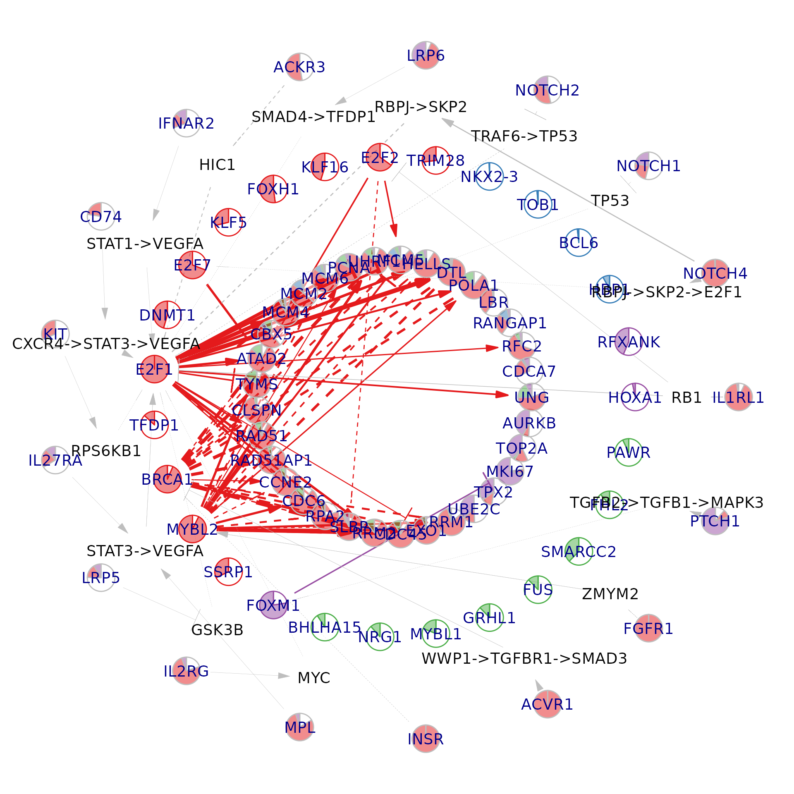
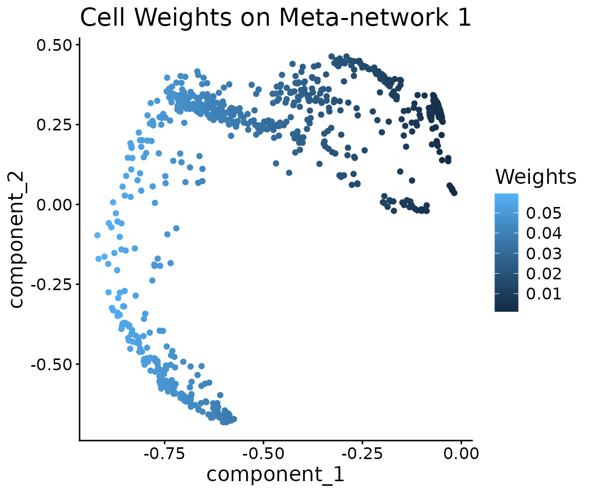
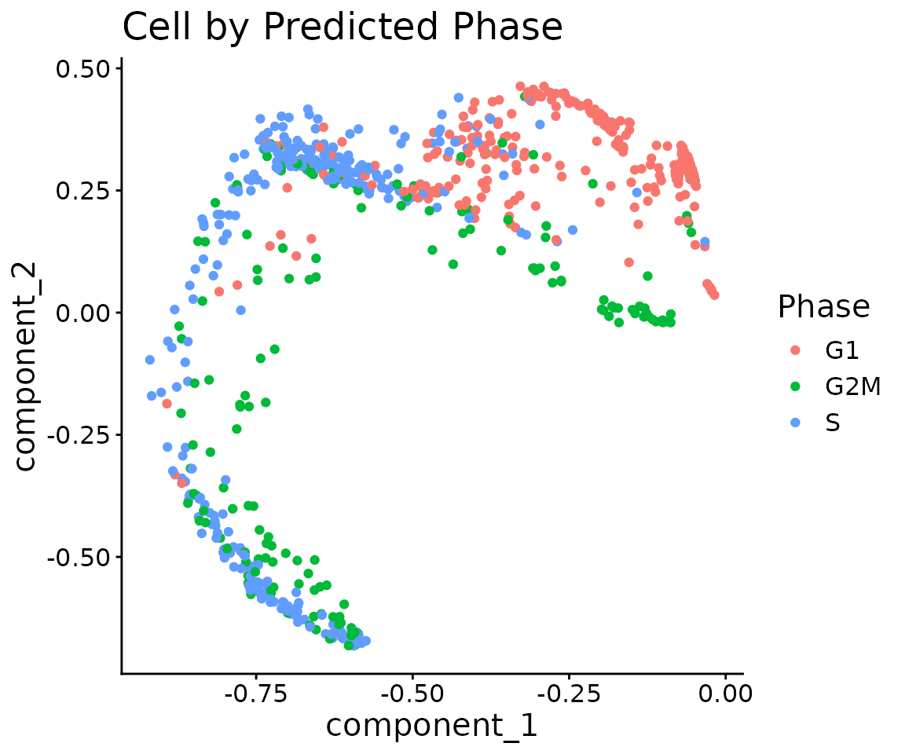
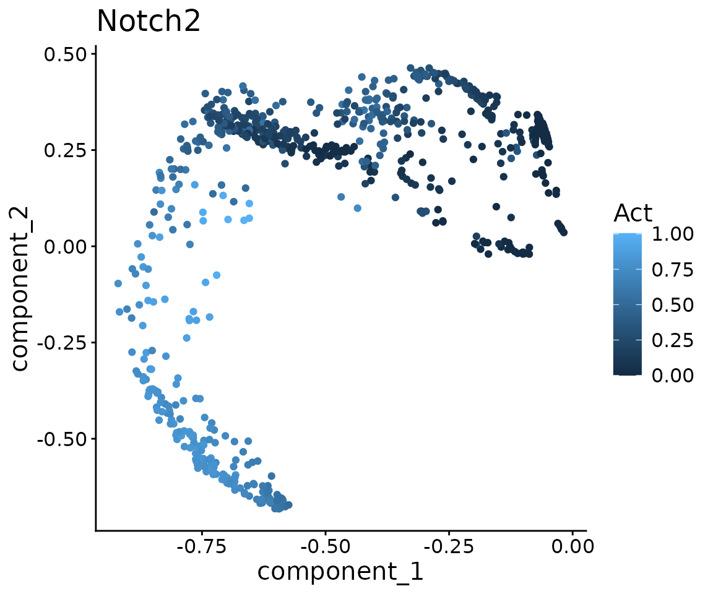

NeighbourNet: Workflow Example
Yidi Deng
2025-11-10
cell-cycle.Rmd
library(Seurat)
#> Loading required package: SeuratObject
#> Loading required package: sp
#> 'SeuratObject' was built under R 4.6.0 but the current version is
#> 4.6.2; it is recomended that you reinstall 'SeuratObject' as the ABI
#> for R may have changed
#> 'SeuratObject' was built with package 'Matrix' 1.7.5 but the current
#> version is 1.7.6; it is recomended that you reinstall 'SeuratObject' as
#> the ABI for 'Matrix' may have changed
#>
#> Attaching package: 'SeuratObject'
#> The following objects are masked from 'package:base':
#>
#> intersect, t
#> v6.0 adds significant improvements in speed and efficiency, particularly for large datasets.
#> For more information, see https://satijalab.org/seurat/articles/announcements.
library(NeighbourNet)
library(ggplot2)
library(igraph)
#>
#> Attaching package: 'igraph'
#> The following object is masked from 'package:Seurat':
#>
#> components
#> The following objects are masked from 'package:stats':
#>
#> decompose, spectrum
#> The following object is masked from 'package:base':
#>
#> union
library(patchwork)
# Data of murine hematopoietic progenitors generated by Nestorowa et al. (2016)
# We acquired the data from the Seurat vignette that demonstrate cell-cycle scoring
# https://satijalab.org/seurat/articles/cell_cycle_vignette.html
exp.mat <- read.table(
file = "./nestorawa_forcellcycle_expressionMatrix.txt",
header = TRUE,
row.names = 1,
check.names = FALSE
)
# Cell-cycle markers from Tirosh et al. (2015) are available via Seurat.
# These are separated into S-phase and G2/M-phase markers.
s.genes <- cc.genes$s.genes
g2m.genes <- cc.genes$g2m.genes
# Create a Seurat object and run basic preprocessing
obj <- CreateSeuratObject(
counts = Matrix::Matrix(as.matrix(exp.mat), sparse = TRUE)
)
obj <- NormalizeData(obj)
#> Normalizing layer: counts
obj <- CellCycleScoring(
obj,
s.features = s.genes,
g2m.features = g2m.genes,
set.ident = TRUE
)
#> Warning: The following features are not present in the object: MLF1IP, GMNN,
#> not searching for symbol synonymsPreprocessing
We first perform quality control and gene selection, then prepare the object for NeighbourNet.
# Filter out lowly expressed genes and annotate TFs/targets/receptors/ligands
genes <- NeighbourNet::select.gene(obj, min.cells = 10)Run PCA on the selected genes. Co-expression will be measured within this gene set.
obj <- NeighbourNet::prepare.seurat(obj, genes = genes$genes)
#> Running Seurat scaling and PCA...Construct the KNN graph used by NeighbourNet.
obj <- NeighbourNet::prepare.graph(obj)
#> Building KNN graph...Optionally, for data sets with many cells (> 5000), you can run the regression on a subset of representative cells.
# Not run
obj <- NeighbourNet::select.cell(obj)Finally, set up the regression problem and compute local variance.
# Local variance is computed for predictor and response genes.
# Response genes are low-rank approximated.
# Here we measure co-expression between TFs (predictors) and cell-cycle targets (responses).
targets <- c(s.genes, g2m.genes)
obj <- NeighbourNet::prepare.reg(
obj,
predictors = genes$tfs,
responses = targets
)
#> Calculating local variance.The NeighbourNet regression settings are stored in the
misc slot:
NeighbourNet regression
Run NeighbourNet regression to obtain per-cell co-expression networks.
obj <- NeighbourNet::run.nn.reg(
obj,
responses = targets,
return.p.val = TRUE
)
#> Return smoothed effect, can only generate networks for sampled cells.
#> Return unpruned effect.
#> Return p-value.
#> Downstream analysis will be performed on the effect tensor.
#> Downstream analysis will perform network pruning.
#> Build the Laplacian operator.
#> Now regress.The resulting network ensemble is stored in NNet.mod
within the misc slot.
# effect: (response × predictor × cell) tensor of co-expression effect sizes
# p.val : corresponding significance tensor
Seurat::Misc(obj, "NNet.mod") %>% names()
#> [1] "effect" "p.val" "meta.network" "meta.response"
#> [5] "mus" "sigmas" "subsampled" "smoothed"
#> [9] "pruned" "gene.sets" "cells" "defaults"
#> [13] "custom.y" "w"Build meta-networks summarising the per-cell networks.
obj <- NeighbourNet::build.meta.network(obj)
#> Now construct the covariance matrix.
#> Eigen decomposition.
#> Non-negative PCA.Meta-networks are stored as a (response × predictor × meta-cell) tensor:
Visualisation
We next visualise key TF–target subnetworks and upstream signalling structure.
Select central genes
First, identify central genes based on eigenvector centrality across meta-networks.
# All responses will be visualised when keep.responses = TRUE.
# n.net controls the number of meta-networks to examine.
# For each meta-network, k singular vectors are used, and
# n.per.component top-loading genes per component are selected.
central.genes <- NeighbourNet::select.central.genes(
obj,
keep.responses = FALSE,
n.per.component = 4,
n.net = 5,
k = 2
)Prepare visualisation settings
# TFs (or the chosen g2 layer) are clustered into n.clu groups (colour-coded)
obj <- NeighbourNet::prepare.visualise(
obj,
central.genes = central.genes,
n.clu = 4
)Visualise a per-cell network
i <- 1
NeighbourNet::visualise.network(
obj,
i,
cutoff = 0.95,
radius = c(0.4, 0.7, 0.85, 1),
pie.radius = 0.04,
text.size = 5
)
#> Warning: The `vp` argument of `get_edge_ids()` supplied as a matrix should be a n times
#> 2 matrix, not 2 times n as of igraph 2.1.5.
#> ℹ either transpose the matrix with t() or convert it to a data.frame with two
#> columns.
#> ℹ The deprecated feature was likely used in the igraph package.
#> Please report the issue at <https://github.com/igraph/rigraph/issues>.
#> This warning is displayed once per session.
#> Call `lifecycle::last_lifecycle_warnings()` to see where this warning was
#> generated.
Visualise a meta-network component
i <- 1
meta.p <- Seurat::Misc(obj, "NNet.mod")$meta.network$p.val[,, i]
cutoff <- apply(meta.p, 1, max) %>%
sort(decreasing = TRUE) %>%
mean()
NeighbourNet::visualise.network(
obj,
i,
meta.network = TRUE,
cutoff = cutoff,
radius = c(0.4, 0.7, 0.85, 1),
pie.radius = 0.04,
text.size = 5
)
Explore a network interactively
With interactive = TRUE, the same meta-network is drawn
as an interactive widget (this needs the visNetwork package). Hover over
a gene or an edge to see its values, click a gene (or pick it from the
Select a gene menu) to highlight its partners, and scroll to
zoom. TFs are diamonds filled with their cluster colour, targets are
circles, receptors are triangles and intermediate signalling steps are
small squares. Dashed edges are co-expression only (undirected, not in
prior knowledge); an arrow or a bar marks an edge that prior knowledge
records as activation or inhibition.
NeighbourNet::visualise.network(
obj,
i,
meta.network = TRUE,
cutoff = cutoff,
radius = c(0.4, 0.7, 0.85, 1),
interactive = TRUE
)Visualise meta-network components in PC space
We can also inspect which cells contribute to a given meta-network component in the meta-network PC space.
i <- 1
pcs <- Seurat::Misc(obj, "NNet.mod")$meta.network$pcs
weights <- Seurat::Misc(obj, "NNet.mod")$meta.network$npca.loadings[, i]
ggplot(pcs) +
geom_point(aes(component_1, component_2, colour = weights)) +
scale_color_continuous("Weights")+
theme_classic() +
theme(text = element_text(size = 15))+
ggtitle("Cell Weights on Meta-network 1")
ggplot(pcs) +
geom_point(aes(component_1, component_2, colour = obj$Phase)) +
scale_color_discrete("Phase")+
theme_classic() +
theme(text = element_text(size = 15)) +
ggtitle("Cell by Predicted Phase")
Receptor activity
We now compute receptor activity scores using NeighbourNet’s receptor-TF-target integration.
act <- NeighbourNet::receptor.activity(obj)
#> Now infer receptor activity.Visualise NOTCH2 activity and identify mediating TFs
notch2.act <- act$receptor.act["NOTCH2", ] %>% as.numeric()
ggplot(pcs) +
geom_point(aes(component_1, component_2, colour = notch2.act)) +
scale_color_continuous("Act")+
theme_classic() +
theme(text = element_text(size = 15))+
ggtitle("Notch2")
tf.cor <- cor(notch2.act, t(act$tf.act)) %>%
drop() %>%
sort(decreasing = TRUE)
#> Warning in cor(notch2.act, t(act$tf.act)): the standard deviation is zero
head(tf.cor)
#> E2F1 E2F2 E2F5 RFX1 TCF12 SIN3A
#> 0.9870145 0.7801702 0.4791721 0.4745675 0.3979142 0.3787773We can inspect the inferred signalling path from NOTCH2 to a candidate TF (e.g. E2F1) using the prior signalling graph:
igraph::shortest_paths(
NeighbourNet::sig.graph,
from = "NOTCH2",
to = "E2F1",
weights = 1 / igraph::E(NeighbourNet::sig.graph),
output = "both"
)$vpath
#> [[1]]
#> + 4/9867 vertices, named, from 2d729a0:
#> [1] NOTCH2 TRAF6 TP53 E2F1